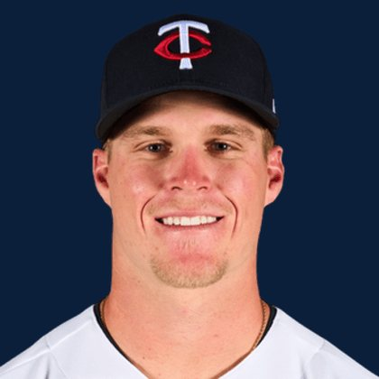

BASE KEEP
The Keep · The Diamond
Player File · OF MIN

Walker Jenkins
OF · MIN · age 21 · B/T LR · 6' 3" / 210 lbs · Draft 2023 · Wilmington, USA
Keep avg60.26
# Boards23
BK Value2,256
Spread41–88
Hitting
| Year | G | AB | R | H | 2B | HR | RBI | SB | BB | SO | AVG | OBP | SLG | OPS |
|---|---|---|---|---|---|---|---|---|---|---|---|---|---|---|
| 2026 AAA | 63 | 240 | 43 | 70 | 17 | 7 | 20 | 13 | 36 | 44 | .292 | .388 | .475 | .863 |
The Keep#58BK 2,256
The Lineup#45BK 2,926
The Diamond#59BK 2,212
The 2026 line
Keep #58 · avg 60.26 · 23 boards · .292 / 7 HR / 13 SB / .863 OPS
Baseball Savant
Starcast · spray · pitch
Percentile ranks (Starcast) plus the official Savant spray chart for bats and pitch chart for arms. Open the full Baseball Savant page.
No 2026 Savant percentile sample yet. The spray and pitch charts below still load from Baseball Savant.
Hits spray chart
Minus
- Board spread 41–88 (47 ranks).
Board graph
Spread 41–88 · 23 sources
Every Board
Spread 41–88 · 23 sources
| Source | Rank |
|---|---|
| Baseball Prospectus | 41 |
| The Dynasty Dugout | 41 |
| Baseball America | 41 |
| MLB Pipeline mix | 41 |
| Razzball | 56 |
| RotoWire | 56 |
| FanGraphs The Board | 56 |
| Enos Slaughter | 56 |
| The Athletic | 61 |
| Dynasty League Baseball | 62 |
| CBS Sports | 63 |
| Ottoneu | 63 |
| Four-Seam Fantasy | 64 |
| ESPN | 65 |
| NFBC ADP | 65 |
| Fantasy Baseballers | 65 |
| Mastersball | 65 |
| Yahoo Fantasy | 65 |
| ATC ROS | 65 |
| Pitcher List | 67 |
| TDG Points | 69 |
| RotoGraphs Model | 71 |
| FantasyPros Dynasty ECR | 88 |
On The Keep nearby — Daylen Lile (#56) · Munetaka Murakami (#57) · Zack Wheeler (#59) · Logan Henderson (#60)
All players · The Keep · The Diamond · BK News · The Lineup · Pitchers · Calculator